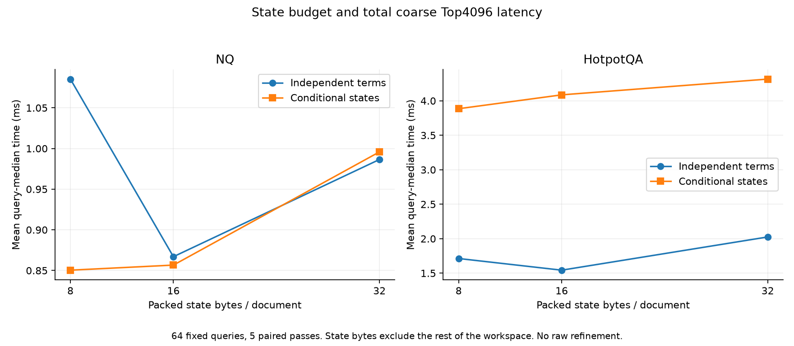
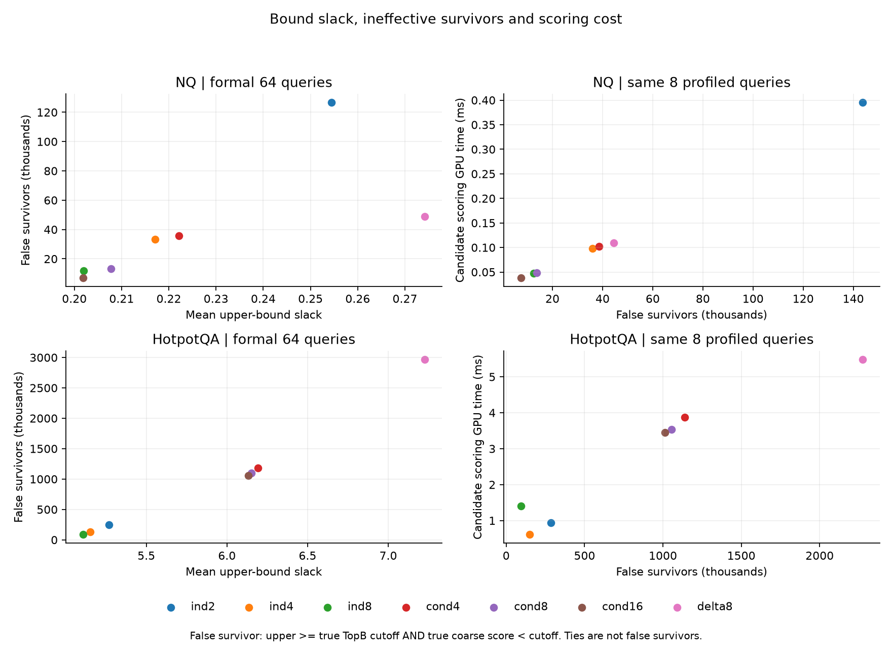
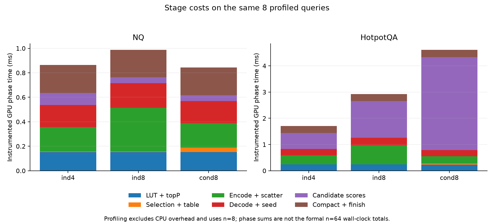

Full existing refinement pipeline; 64 paired queries, five passes, one process session. Negative time change means faster.
| Dataset | Time change | Query bootstrap 95% interval | Wins / ties / losses |
|---|---|---|---|
| NQ | -8.92% | [-9.46%, -8.38%] | 64 / 0 / 0 |
| HotpotQA | -20.39% | [-29.08%, -14.50%] | 63 / 0 / 1 |
Coarse TopB only; both 24B/document. Average three session medians within each query before resampling. The positive mean change supports stopping the current hybrid route.
| Dataset | Time change | Query bootstrap 95% interval | Wins / ties / losses |
|---|---|---|---|
| NQ | +2.10% | [+2.00%, +2.21%] | 0 / 0 / 64 |
| HotpotQA | +17.26% | [+5.98%, +32.93%] | 23 / 0 / 41 |



Packed state sizes are not total memory. Per-method workspace maxima and shared-scope diagnostics are in summary.json. Cached ideal tables are offline oracles and are excluded from deployable latency curves. Operational seed cutoffs may differ from true TopB cutoffs. Failed/invalid configurations remain in evidence/failed and are excluded from successful aggregates.